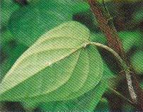

| Home |
| PEST OF BETELVINE |
mAJOR pESTS |
| 1. Aphid |
| 2. Scales |
| 3. White fly |
| 4. Mealy bug |
| 5. Shoot bug |
mINOR pESTS |
| 1. Leaf eating caterpillar |
| 2. Termite |
| 3. Green looper |
| 4. Giant African snail |
| Questions |
| Download Notes |
| Questions |
| Download Notes |
BETELVINE :: MINOR PEST :: BETERLVINE
10. Betelvine Bug: Dispunctus politus
The nymphs and adults damage the leaves by puncturing and sucking the juice causing the leaves to shrivel, fade and dry up.
|  |